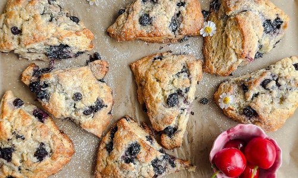

Do you enjoy pastries? How confident are you to experiment with recipes until you got them to a science? If you said yes and very confident to those question then baking might be the hobby for you! Baking is the act of creating food using dry heat. With this you can create a multitude of foods! From breads to brownies to even cakes you can do it! Also, it doesn't require you go outside and do intense physical activity so many people can enjoy this hobby. If you're interested in baking check it out! It can't hurt to try!
This will take you off site